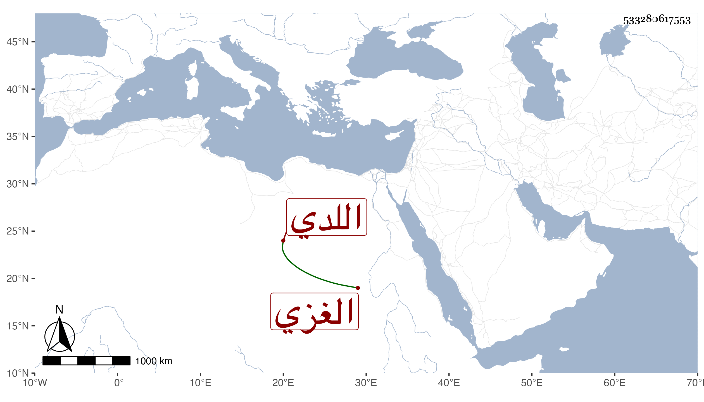

0902Sakhawi.DawLamic.ITO20230111-ara1.EIS1600.533280617553
Biography ID: 533280617553
267
عبد الرحمن بن عبد الوهاب بن الزين اللدي الأصل الغزي ناظر جيشها بل عظيمها وأخو سعد الدين إبراهيم الماضي ممن يذكر بالأموال الغزيرة . مات بها وقد جاز السبعين فجأة في ليلة الجمعة سلخ شعبان سنة اثنتين وثمانين قبل إكماله المدرسة التي أمره السلطان ببنائها له هناك فالتزم ولده إبراهيم الماضي باكمالها .
